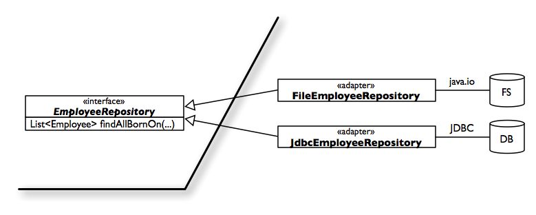

Purpose
To learn about the hexagonal architecture, which is a good way to structure an application, and how to shield your domain model from external apis and systems.
Prerequisites
This is not a basic exercise. I suppose you are already familiar with TDD and refactoring. You will need a computer with Java ≥ 1.5 and a Java IDE (I assume you will use Eclipse).
Ingredients
This kata can be done in two ways; if you want to try the refactoring way, then import the code in your IDE. If you want to try the TDD way, start with a blank Java project.
Problem: write a program that
- Loads a set of employee records from a flat file
- Sends a greetings email to all employees whose birthday is today
The flat file is a sequence of records, separated by newlines; this are the first few lines:
last_name, first_name, date_of_birth, email
Doe, John, 1982/10/08, john.doe@foobar.com
Ann, Mary, 1975/09/11, mary.ann@foobar.com
The greetings email contains the following text:
Subject: Happy birthday!
Happy birthday, dear John!
with the first name of the employee substituted for “John”
The program should be invoked by a main program like this one:
public static void main(String[] args) {
...
BirthdayService birthdayService = new BirthdayService(
employeeRepository, emailService);
birthdayService.sendGreetings(today());
}
Note that the collaborators of the birthdayService objects are injected in it. Ideally domain code should never use the new operator. The new operator is called from outside the domain code, to set up an aggregate of objects that collaborate together.
Goals
The goal of this exercise is to come up with a solution that is
- Testable; we should be able to test the internal application logic with no need to ever send a real email.
- Flexible: we anticipate that the data source in the future could change from a flat file to a relational database, or perhaps a web service. We also anticipate that the email service could soon be replaced with a service that sends greetings through Facebook or some other social network.
- Well-designed: separate clearly the business logic from the infrastructure.
An optional complication
If you want to develop further the domain logic, you can take into account the special rule for people born on a 29th of February: they should be sent greetings on the 28th of February, except in leap years, when they will get their greetings on the 29th.
Testability
A test is not a unit test if:
- It talks to a database
- It communicates across the network
- It touches the file system
- You have to do things to your environment to run it (eg, change config files, comment line)
Tests that do this are integration tests.
Integration tests have their place; but they should be clearly marked as such, so that we can execute them separately. The reason we draw this sharp distinction is that unit tests should be
- Very fast; we expect to run thousands of tests per second.
- Reliable; we don’t want to see tests failing because of random technical problems in external systems.
One way to make code more testable is to use Dependency Injection. This means that an object should never instantiate its collaborator by calling the new operator. It should be passed its collaborators instead. When we work this way we separate classes in two kinds.
- Application logic classes have their collaborators passed into them in the constructor.
- Configuration classes build a network of objects, setting up their collaborators.
Application logic classes contain a bunch of logic, but no calls to the new operator. Configuration classes contain a bunch of calls to the new operator, but no application logic.
The hexagonal architecture
The traditional way to structure an application in layers is
+--------------+
| presentation |
|--------------|
| domain |
|--------------|
| persistence |
+--------------+
The meaning of a layer diagram is that
- a layer is a set of classes;
- a class cannot reference classes in layers above; a class can only reference other classes in the same layer, or in the lower layers.
In other words, it should be possible to compile a layer without access to the source code of the layers above it, as long as we have the source code of the layers below.
The traditional three-layers architecture has many drawbacks.
- It assumes that an application communicates with only two external systems, the user (through the user interface), and the database. Real applications often have more external systems to deal with than that; for instance, input could come from a messaging queue; data could come from more than one database and the file system. Other systems could be involved, such as a credit card payment service.
- It links domain code to the persistence layer in a way that makes external APIs pollute domain logic. References to JDBC, SQL or object-relational mapping frameworks APIs creep into the domain logic.
- It makes it difficult to test domaain logic without invoving the database; that is, it makes it difficult to write unit tests for the domain logic, which is where unit tests should be more useful.
The hexagonal architecture avoids these problems by treating all external systems as equally external. The system is not seen as a pipe with user interface as one end, and the database at the other. We model the system as a kernel of application code, surrounded by ports and adapters to the external systems.

Every external systems is hidden behind a facade that:
- Provides a simplified view of the external system, with only the operations that we need to do with it.
- Is expressed in terms of the domain model.
The domain model does not depend on any other layer; all other layers depend on the domain model.
+-----+-------------+----------+
| gui | file system | database |
|-----+-------------+----------+
| domain |
|------------------------------+
How can we make the domain independent, for instance, of the database? We should define a repository interface that returns domain objects. The interface is defined in the domain layer, and is implemented in the database layer.
The Facade-Adapter combo
The way to implement the hexagonal architecture is to abstract external systems and APIs with a Facade. A facade is a simplified view of the external system. For instance, there are a million of things that I could do with SQL and JDBC and my relational database. But my application only needs to do a few, specific things with the DB; for instance, retrieve all the employees that match some criterion. In that case, I can write a simple interface that exposes just that operation:
interface EmployeeRepository {
List<Employee> findEmployeesBornOn(int month, int day);
}
Note that the interface is written in terms of domain objects: the Employee object belongs to the domain. A case could be made that the specification for the date (month, day) should also be a domain object; I leave that to you, the reader.
So that was the facade part. The domain logic will only deal with the facade, and can be tested thoroughly using stubbed and mocked versions of that interface. But what about the real implementation?

The code that talks with the real database (or flat file, in our case) implements the facade and correspond to the adapter pattern. The adapter can be unit tested as well, by mocking the external APIs, but this is usually not worth the effort. Mocking the JDBC APIs is in most cases very complicated. It’s perhaps more effective to just test it on a copy of the real database, or maybe with an in-memory version of the real database. There are no hard-and-fast rules here; there is a mixed bag of tricks. One thing most proponents of mock objects agree on is that you should only mock your own interfaces (see section 4.1 of Mock Roles, Not Objects).
Acknowledgment
The idea for the exercise of sending email I got from someone I overheard at an XP Day; I think it was Willem van den Ende but I’m not sure.
Thanks to the Orione team for beta-testing and commenting on this kata, in particular Marco Gulino and Roberto Albertini who performed it more than once.
References
The standard layered architecture is described in Patterns of Enterprise Application Architecture by Martin Fowler, and in Domain Driven Design by Eric Evans.
The Hexagonal architecture is due to Alistair Cockburn. Here is a video of Alistair explaining it.
My collection of resources on the Hexagonal Architecture
A pattern similar to the hexagonal architecture is the Onion architecture by Jeffrey Palermo.
Miško Hevery explains the adapter-facade combo in his post Interfacing with hard-to-test third party code.
Again Miško Hevery talks on Google Video on Dependency Injection, part of the Clean Code Talks Series.
The Dependency Injection pattern is one form of the Dependency Inversion Principle (pdf) by Bob Martin. Thanks to Jacopo for pointing out that this comment of mine was wrong.
Test Driven by Lasse Koskela contains plenty of tricks about how to do integration tests in Java.
Appendix: Useful snippets
How to convert a String to an InputStream:
new ByteArrayInputStream(string.getBytes());

This work is licensed under a Creative Commons Attribution-Share Alike 2.5 Italy License.
Update 2009/01/17: restored images, added CC license.
Update 2009/12/09: add link to my Hexagonal Architecture page
Update 2020/01/07: fix the url for Alistair Cockburn’s page, add video